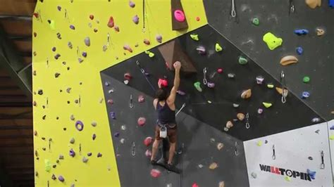

L'escalade en voie consiste à grimper des parcours définis sur des murs. Les grimpeurs doivent atteindre le sommet aussi rapidement que possible en utilisant des prises de main et de pied. C'est à la fois un défi physique et mental, nécessitant force et concentration.
Les cotations utilisées dans les compétitions d'escalade aux Jeux Olympiques peuvent varier selon le système adopté par les organisateurs et les fédérations sportives internationales. Ils peuvent inclure des systèmes de cotation tels que le système français (ex : 5a, 6b, etc.), le système UIAA (Union Internationale des Associations d'Alpinisme), ou d'autres systèmes spécifiques à l'escalade sportive compétitive.
